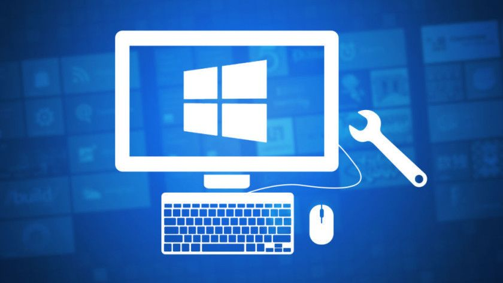

Estás son algunas herramientas de un sistema operativo y sus
controladores.

Registro Boot: Crea un registro de texto (Ntbtlog.txt)
que lista los controladores cargados o con error en el inicio.
(Tipo: Sistema operativo, opción de inicio).
Administrador de dispositivos: Muestra en pantalla y
cambia configuración de hardware y controladores.
(Tipo: Sistema operativo, GUI).
Administrador de comprobación de controladores:
Aislamiento de controlador defectuoso.
(Tipo: Sistema operativo, GUI).
Servicio de información de errores: Monitoriza el sistema
operativo ante problemas que afectan a aplicaciones y
componentes de Windows Server 2003. Cuando sucede un problema,
puede enviarse un informe a Microsoft, donde un proceso
automatizado busca en la base de datos de errores informados en
busca de condiciones de coincidencia, y en caso de existir
información, responder con cualquier sugerencia para resolver el
problema. (Tipo: Sistema operativo, GUI).
Comprobación de firmas de archivo: Búsqueda de archivo
que no han sido firmados digitalmente.
(Tipo: Sistema operativo, GUI).
Depuradores de Kernel: Analizando la memoria del equipo o
un archivo de memoria dump escrito en disco cuando sucede un
mensaje de STOP. (Tipo: Depuración).
Monitor de memoria: Detección y análisis de errores de
memoria. (Tipo: Soporte, GUI).
Información de equipo: Muestra en pantalla información
del sistema detallada.
(Tipo: Centro de ayuda y soporte).
Análisis on-line de caída del sistema: Envía la
información de un archivo dump a un sitio web hospedado en
Microsoft para ser evaluado. Un proceso automatizado busca en
una base de datos de elementos conocidos coincidencias.
Opcionalmente puede recibirse un e-mail con
información/actualización de información sobre el problema.
(Tipo: Sitio Web).
Seguimiento de sucesos de apagado: Graba información en
el registro del sistema describiendo los motivos de apagado o
reinicio del equipo. (Tipo: Sistema operativo, GUI).
Utilidad de configuración del sistema: Habilita o
deshabilita configuraciones de sistema e inicio con propósitos
de diagnóstico. (Tipo: Centro de ayuda y soporte).
Systeminfo: Muestra en pantalla la información de
configuración del equipo. Versión en línea de comandos del GUI
Información de sistema.
(Tipo: Sistema operativo, línea de comandos).
Información del sistema: Muestra en pantalla la
información de sistema, hardware, componentes del sistema y
software. Podemos iniciarlo como una herramienta independiente o
mediante el Centro de Ayuda y Soporte.
(Tipo: Sistema operativo, GUI).
Herramienta WMIC: Muestra y reúne Información de
configuración del equipo.
(Sistema operativo, línea de comandos).
Windows Update: Identifica e instala actualizaciones del
sistema. (Tipo: Sistema operativo, Navegador).